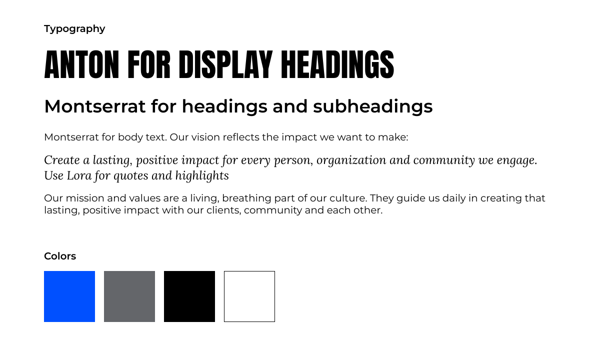
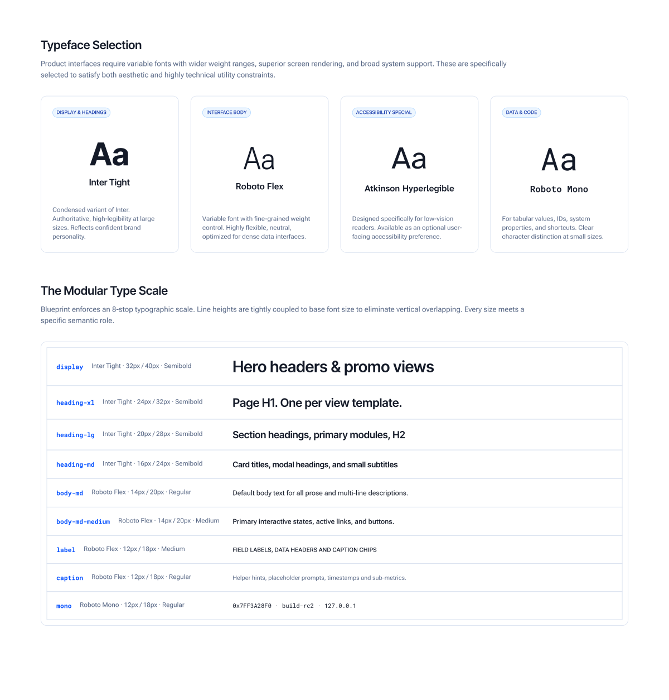
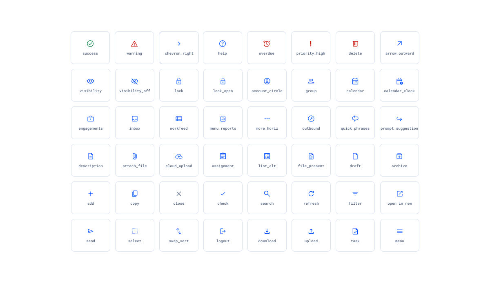
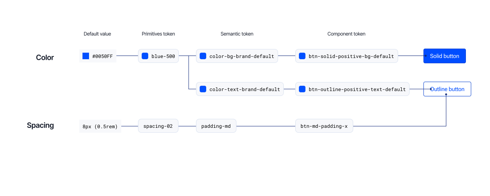
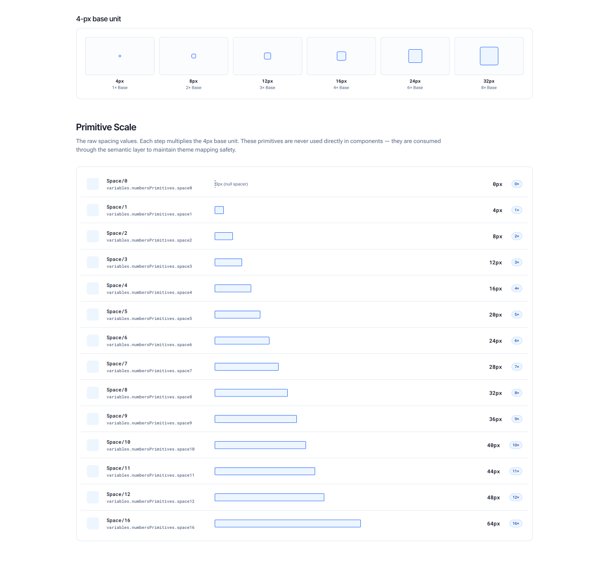
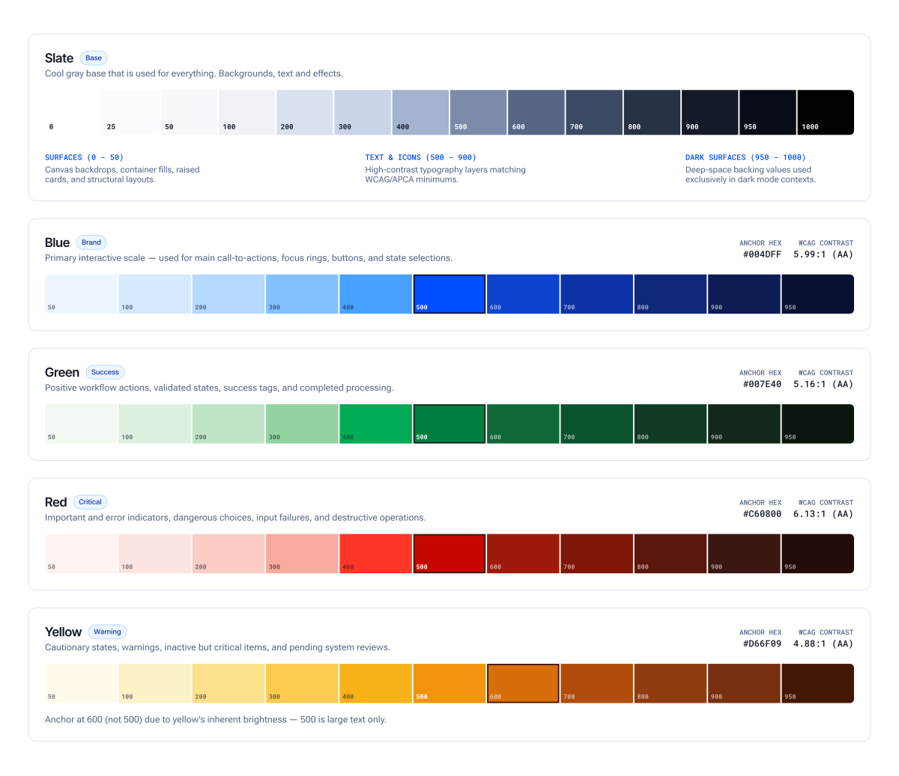
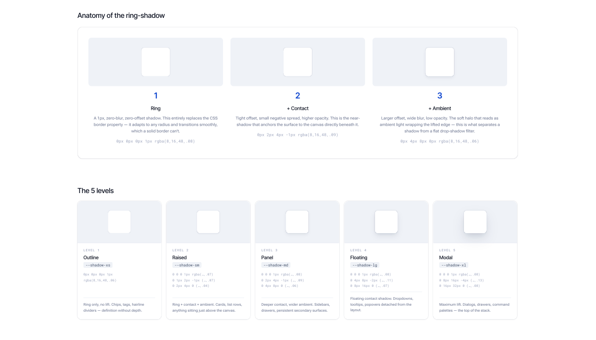
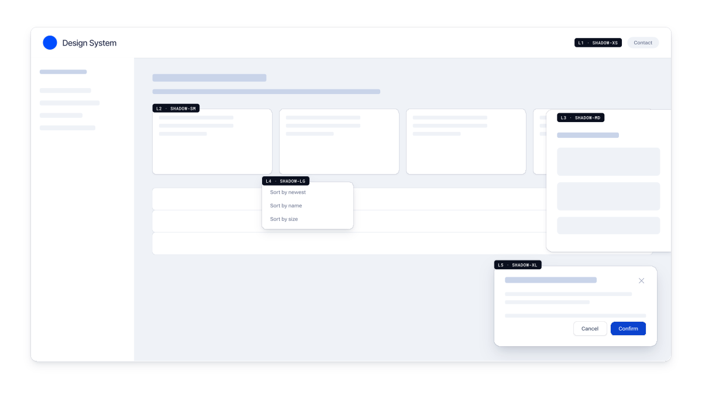
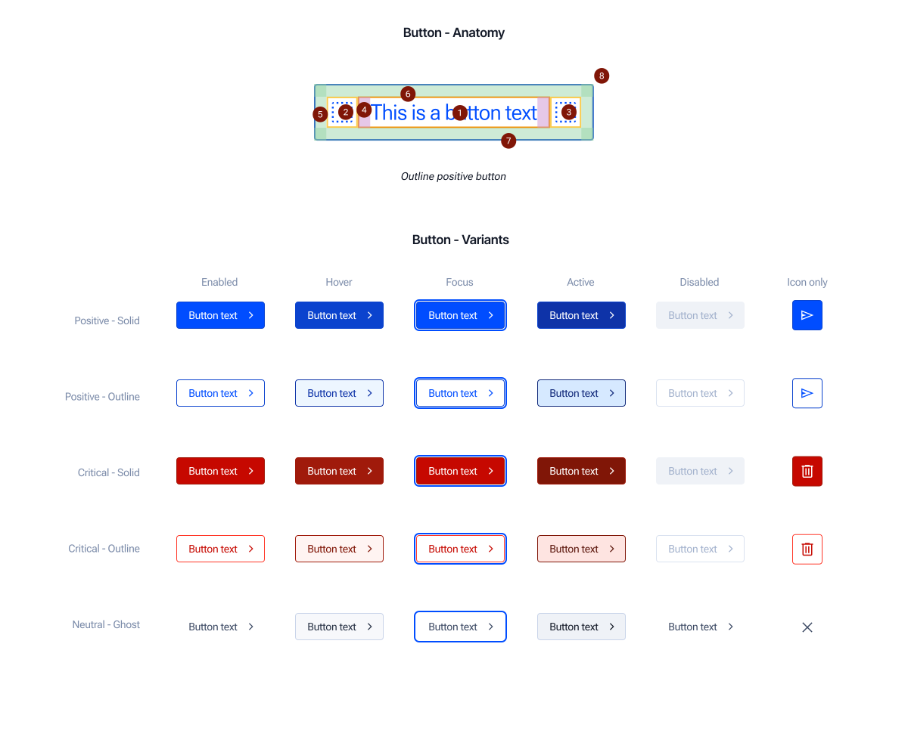
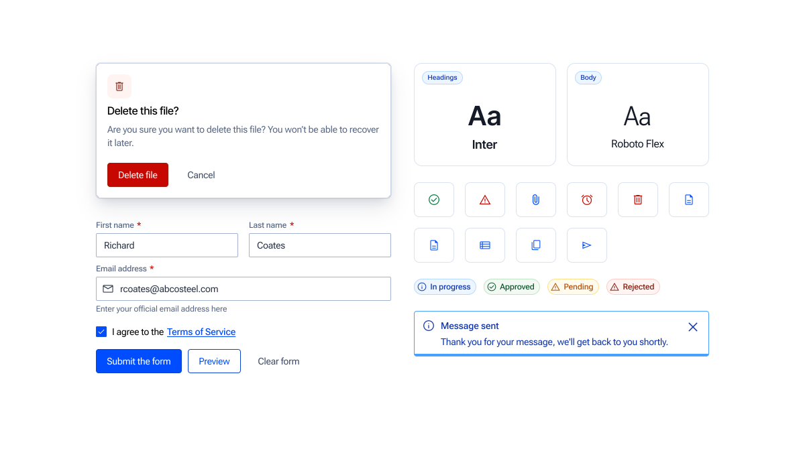

Detailed UI masked per NDA. Process artifacts and metrics shared with permission.
Context
The brand system at a top-20 US accounting and consulting firm was built for print and editorial. Nobody had thought much about product. Into that gap, engineering teams filled in their own interpretations, on whatever stack they were already on, with nothing to check their work against.
I saw the trigger up close. Inside a single project, the same button showed up four different ways, built by four different developers who'd each made their own reasonable call. No shared framework, no single source of truth. Teams that should have been building the same thing were quietly building four different things instead.
That's when it stopped being a nice-to-have and turned into a real problem worth fixing. I took it to the firm's internal IT Director and pitched building a design system. The pitch got approved, not as a funded line item with set hours, but as permission to work on it whenever sprint commitments left room. Meeting the deadlines the team set for itself meant putting in time outside working hours; that's what actually got Phase 1 built.
Why a style guide wouldn't have fixed this
Multiple versions of the same component meant nobody had unified control over how it looked or worked. A single bug fix meant hunting down every page it touched and fixing it there too, one at a time. Simple problems turned tedious fast.
Documentation alone wouldn't have fixed that. Documentation describes drift, it doesn't stop it. What the team actually needed was something structural: one source every team could point to by intent, and a way to push updates without asking anyone to rewrite their code.

Two phases, and the pivot between them
Phase 1 was Figma and documentation, nothing else. The task was to audit the most heavily used components inside the Hub platform, then rebuild them from scratch as a proper component kit, starting underneath the components entirely: color, typography, spacing, elevation, iconography, all the atomic pieces, before a single component got touched.
The pivot to Phase 2 happened partway through, almost by accident. It became clear that a well-documented design system doesn't just keep Figma tidy. It makes a design-to-code workflow possible. Once I saw that, Phase 2 more or less defined itself. Satvik Nayak, a frontend engineer with real depth in React, Base UI, Radix UI, and Tailwind CSS, joined the team partway through Phase 1, and his technical depth is what made Phase 2 possible in the first place; we planned it together once he was on board. It wasn't a random hire either: upcoming projects, and pieces of the ones already running, were headed toward React anyway. So the plan became simple: move fast, get components into real code, and prove it out on the task management work inside the Hub platform first.
This was never a one-person job. I reported to Nabarun, our UX Lead Architect, who had final say. Within that, I had the liberty to decide color, typography, elevation, and iconography based on research and judgment, brought to him for review and sign-off. With Satvik on Phase 2, it worked differently again: he owned how everything came together in code, Code Connect included, with just as much say in his half as I had in mine.
Composition model: Atomic Design
Everything under Foundations and everything in the component kit follows Brad Frost's Atomic Design methodology: atoms, molecules, organisms, templates, and pages, each level built from the one below it. I didn't bolt this on after the fact; it's the reason Phase 1 was sequenced the way it was. Foundations got built first, and a single component wasn't touched until color, typography, spacing, elevation, and iconography were locked. That's Atomic Design's own build order, applied without ever naming it in the earlier drafts of this case study, an omission worth correcting since it's the methodology the whole system runs on.
One distinction matters here, because it's easy to get wrong: the token tiers (Primitive → Semantic → Component, covered in the next section) and the Atomic Design tiers (atoms → molecules → organisms) are two different hierarchies, not the same one under two names. Token tiers describe how a value resolves: how #004DFF becomes Brand/Primary becomes the background of a solid button. Atomic Design describes how a component gets composed: how a Button and a Tooltip combine into an icon-only button, and how that combines with others into a toolbar. Foundations sit underneath atoms, supplying the values every atom is built from, the same way protons and electrons sit underneath a chemical atom without being atoms themselves.
- Subatomic (Foundations)
- Color primitives, type scale, spacing scale, elevation shadows, icon spec. Raw values, not independently functional in a UI. A
Space/4token or an OKLCH value doesn't do anything on its own. - Atoms
- Button, Input, Label, Icon, Avatar, Badge, Checkbox, Radio. The smallest components that are still functional on their own. Can't be broken down further without losing what makes them useful.
- Molecules
- Icon-only button + Tooltip, Split Button, Connected Button Group, Form Field (Label + Input + helper/error text). Small, purpose-built groups of atoms. Each one does exactly one job.
- Organisms
- Data Table (rows/columns of text, numbers, indicator icons, icon-button actions, dropdowns, status pills, checkboxes, redirecting actions). Distinct, complex sections of an interface, composed of molecules, atoms, or other organisms.
- Templates
- Page Frame (Header + Footer, in the style of D365 Power Pages), Modal/Drawer Frame (scrim + container). Page-level layout with components placed, content structure defined, no final content yet.
- Pages
- Task management proof of concept (Hub platform, Phase 2). Templates with real content in place, the point where the system gets tested against actual use.
Foundations, covered next, is the subatomic layer: the raw material every atom in the system is built from.
Foundations
This is the subatomic layer: the raw material every atom in the component kit is built from. None of it is directly usable in a UI on its own; a font-weight primitive or a shadow value only becomes something a user interacts with once it's assembled into an atom like Button or Input.
Typography: brand identity meets product legibility
Phase 1 launched with the brand's own editorial fonts: Anton, Montserrat, Lora. On a product screen, none of them held up. Anton is all caps with thick strokes, built for huge display sizes, and it turns into a mess at title scale in a real interface. Montserrat's characters run wide, so anything data-dense started to feel cramped.
The fix was Inter Tight for display and headings, the condensed cut specifically, since it stays legible at large sizes without losing authority, Roboto Flex for body text, a variable font built for dense data, and Roboto Mono for IDs, code, and anything meant to be read by a machine as much as a person.
One more typeface is worth calling out on its own, because it's a real accessibility feature rather than a legibility fix. Atkinson Hyperlegible Next sits in the system as a user-facing preference: turn it on, and it swaps the body font across every text style in the product, with nothing else changing. Not scale, not size, not line-height.
That swap works cleanly because of a decision made one layer down. Font family and weight live only in the primitive layer, never touched directly by a text style. Change one primitive and every text style that depends on it follows automatically. It's the same idea the token system uses at Tier 2: keep the thing most likely to change isolated, so changing it doesn't mean touching fifty other things by hand.

Iconography: a system the brand never specified
This one had the same shape as the typography problem. Brand hadn't specified anything, because icons weren't really part of how the firm's identity showed up anywhere. But the visual identity itself is sharp, no soft curves in it at all, and whatever icon set I picked needed to carry that same character: legible, paired cleanly with the new type system, and sourced from something open and well-built rather than custom I'd have to maintain forever.
Material Symbols, in the Outline style, checked every box. I locked the variable axes into the spec so the family can't quietly drift as different people pull icons into their files.
- Weight
- 300
- Grade
- 0
- Optical size
- 20
- Fill
- 0 (outlined)
- Hosting
- Self-hosted. Icon assets change when the team deliberately updates them.
Icon sizing pairs to line-height, not font size. An icon lives inside the text's vertical rhythm, so matching its bounding frame to that line-height is what makes it sit flush instead of looking stapled on. Interactive icons always get a 44 × 44 px hit area, built with padding, never by inflating the icon itself; decorative icons sitting next to a label don't need that treatment.

Token architecture: three tiers, one direction of flow
Blueprint runs on a three-tier token model. Primitive values sit at the bottom. Semantic tokens, named for what they mean rather than what they look like, sit in the middle. Component tokens sit on top, and those are what a React component actually reads. Everything flows one direction, primitive to semantic to component. A component never reaches down and grabs a primitive directly.
Blue was the first color decision in the design system, and every other hue was built downstream of it. The anchor blue, #004DFF, was chosen to hold up against black as much as against white, since blue elements are frequently paired with black text and used directly on black backgrounds in banners, buttons, and marketing graphics. That decision anchored blue-500 in OKLCH, and every other hue in the system (red, green, yellow, the tinted greys) was then built by holding lightness constant against that same blue-500 anchor and adjusting hue and chroma. That's also why the one deliberate break from the pattern (yellow's anchor moving to 600 instead of 500) reads as a considered exception rather than an inconsistency.

- Tinted grey instead of neutral grey. A cooler slate ties visually to a palette that's mostly blue. Plain neutral grey doesn't do much for an interface on its own.
- OKLCH over HSL. Perceptually uniform, better gamut for dark mode, and directly compatible with Tailwind v4.
- Components consume only the semantic tier. Theming for a new brand or product reroutes at Tier 2 without touching a single component, the same isolation trick typography uses for font family.
- Style Dictionary for the build. One source of truth emits CSS custom properties, Tailwind
@theme, and JSON, so nothing downstream gets locked into one vendor's format.
Spacing: one base unit, two tiers built to overlap on purpose
Spacing follows the same three-tier discipline as everything else. The primitive layer is a flat numeric scale, Space/0 through Space/16, where every step is a multiple of a single 4 px base unit: 0, 4, 8, 12, 16, 20, 24, 28, 32, 36, 40, 44, 48, up to 64 at Space/16. 4 px was the deliberate choice over an 8 px grid: it divides cleanly across common screen densities (1x, 1.5x, 2x, 3x) and lands on a whole pixel at every step, so nothing in the system ever needs to round.
Components never read that primitive scale directly. A semantic layer sits between the raw numbers and the components, split into two purpose-specific tiers. Component spacing handles padding and gaps inside a single component: None 0, XS 4, SM 8, MD 12, LG 16, XL 20. Layout spacing handles the distance between components and sections: XS 16, SM 24, MD 32, LG 40, XL 48. The two tiers deliberately overlap at 16 px: Component/LG and Layout/XS both alias back to the same Space/4 primitive. That's not a naming accident. It's the seam where component-level density hands off to layout-level structure.
The rule that keeps the scale from eroding is simple and absolute: no raw pixel values inside a layout, ever, only a named token. A component's internal padding reaches for a Component token; the margin around that component reaches for a Layout token. Nesting follows the same logic outward: an outer block steps down to an inner one, never the reverse. And the scale doesn't flex at a breakpoint: spacing tokens keep the same value across screen sizes, because re-tuning a layout's rhythm per breakpoint is exactly the kind of per-developer judgment call this system exists to remove.

Color system: a method, applied consistently, broken once on purpose
The order I built these in matters. It's really the whole story. I started with the brand's blue, converted it to OKLCH, and stretched it into an 11-stop ramp. Then, holding lightness constant at every stop, I built red, green, and yellow off that same structure, so all four families would behave the same way moving from light to dark. For slate, I took a desaturated version of the brand blue and grew it into a full grey scale, using Adobe Spectrum as a reference rather than guessing.
Yellow broke the pattern. Holding lightness constant, the way I had for every other color, gave me a yellow that looked muddy and dark, nothing like a warning color should look. So I didn't force it: I moved yellow's anchor up to the 600 stop instead, while blue, red, and green kept theirs at 500. Every color, from its anchor stop down to the darkest step, is AA-marked for white backgrounds. One method, used everywhere, broken on purpose in the one place it stopped working, with the reason written down next to it.

Every color in the system means something specific. Blue is action, brand, anything in-process. Green is success. Yellow is warning. Red I named Critical, and that word choice was deliberate: not "destructive," not "danger." Red in this system isn't only for destructive actions; it's for anything that needs a user's immediate attention, and destructive is just one flavor of that. Critical says the whole truth; the other two words only say part of it.
Info never got its own hue. It's folded into blue on purpose, because when a brand's main color is already blue, people read blue as informational anyway. I wrote that reasoning straight into the token descriptions, so it reads as a decision, not something that just happened to work out that way.
Elevation
Every shadow in this system stacks three layers into a single box-shadow declaration. A 1px ring, zero blur and zero offset, stands in for the border: it stays sharp at any corner radius and transitions smoothly in a way a solid border never could. A tight contact shadow, offset a few pixels and pulled in with a negative spread, anchors the surface to whatever sits beneath it. A wider, softer ambient shadow, with a larger offset and blur, does the actual work of suggesting lift. All three layers are built from the brand's own navy, rgba(8,16,48), rather than a generic grey, so a shadow reads as the material's own tone in shadow rather than a mismatched filter laid over it.

Five tokens carry that structure through the interface: shadow-xs (ring only, no lift, used for chips, tags, and dividers), shadow-sm (cards and rows), shadow-md (panels and drawers), shadow-lg (dropdowns and tooltips), and shadow-xl (modals and dialogs). Offset and blur exactly double at every step, so the jump from one level to the next is a derivable curve, not a guess.
Depth is carried entirely by shadow, never by tinting a surface darker. A lighter, closer-feeling fill reads correctly as lifted; a surface that sinks into a darker fill reads as heavier and further away, the wrong signal for something like a dropdown or a modal that's meant to float above everything else. Every elevated surface stays white or near-white for exactly that reason, and the shadow alone tells the eye how high it's sitting.
That structure earns its complexity. One box-shadow property carries ring, contact, and ambient together, so all three animate on a single transition instead of two properties drifting out of sync. Because the ring is a shadow rather than a stroke, it renders the same over any background, an image, a gradient, a differently tinted panel, without a color chosen against what's behind it. And since elevation never touches the border property, border stays completely free for actual meaning: an invalid field, a selected row, with no override battle against a structural border underneath it.

Atom: Button
The Button is the component that started all of this. Four different implementations in one project were what got the whole pitch approved in the first place. It's also the clearest place to see the token layers actually working together, since every variant is just a combination of choices across a few independent dimensions.
- Style
- Solid · Outline · Ghost. Controls visual weight and prominence in hierarchy.
- Intent
- Positive · Neutral · Critical. Maps to semantic color families.
- Size
- Medium (36 px) · Small (24 px) · Icon · Icon-small.
- Shape
- Rect (4 px radius) · Pill (fully rounded).
- States
- Enabled · Hover · Active/Pressed · Focus · Disabled · Loading. Six, not five: loading gets its own treatment.

Most design systems handle icon padding with a table: one row for leading-icon-only, one for trailing, one for both, one for neither. I skipped the table; the rule here is simpler. The label's own horizontal padding always matches the button's overall padding at that size, half a rem at Medium, a quarter rem at Small, on both sides, no matter which icon slots are filled. Run the math and it lands on the same numbers a four-row table would give you. It's one rule instead of four.
Disabling a button while it's mid-action sounds right, but it isn't. It pulls the button out of the tab order and tells a screen reader the button is unavailable, when really it's just busy. So the loading state sets aria-busy="true" instead, and blocks interaction through pointer-events and a guarded click handler. The button stays focusable, and screen readers announce it correctly as busy, not gone. The spinner takes over the leading icon's spot, and the label can change to something like "Saving…" if it needs to, though it doesn't have to.
An icon-only button has no visible text, so it needs help on two fronts at once: an aria-label for screen readers, and a visible tooltip for anyone navigating by keyboard who can see the screen but has no text label to read. I didn't want that to depend on someone remembering to add both, so the TypeScript types won't even compile without them, and the component wraps itself in a Tooltip automatically whenever iconOnly is true. Nobody has to remember the pattern; it's just how the component works.
React · TypeScript
// Two shapes enforced at the type level. A labelled button gets its
// accessible name from labelText. An icon-only button has no visible
// text, so this literally won't compile unless aria-label AND tooltip
// are supplied. It's a rule that can't be forgotten instead of a rule
// documented in prose.
type LabelledButtonProps = ButtonOwnProps & {
iconOnly?: false
labelText: string
}
type IconOnlyButtonProps = ButtonOwnProps & {
iconOnly: true
labelText?: never
"aria-label": string
tooltip: string
}
export type ButtonProps =
(LabelledButtonProps | IconOnlyButtonProps) &
React.ButtonHTMLAttributes<HTMLButtonElement>Button is the atom everything else in the component kit builds on. It doesn't combine with anything else to become useful. It already is. But it's also the piece that molecules like the icon-only button's Tooltip wrapper, the Split Button, and the Connected Button Group all start from, which is why getting its states, sizing, and accessibility contract right mattered more than any other single component in the system.

Molecule: Icon-only Button + Tooltip
The clearest molecule in the system is small on purpose. An icon-only button is an Atom (Button) that, alone, fails a basic usability requirement: it has no visible text, so a screen reader user and a keyboard user who can see the screen but has no label to read both lose information a labelled button gives away for free. Pairing it with a Tooltip atom fixes that. Together, the two atoms take on a property neither one has by itself: an icon-only control that's fully identifiable no matter how someone is navigating the interface. That's the molecule test from Atomic Design: a group of atoms that, combined, does something none of them does alone.
The pairing isn't optional or left to whoever's building the screen to remember. The component's TypeScript types won't compile for an icon-only button unless both aria-label and tooltip are supplied, and the component wraps itself in the Tooltip atom automatically whenever iconOnly is true. The molecule is enforced at the type level, not just documented in prose.
Split Button and Connected Button Group are the same molecule pattern applied one level up, both compositions of the Button atom, both fully designed and documented in the Docsite as designed-but-not-built, the same status the "Documentation as a first-class artifact" section describes for the system generally. A Split Button pairs a primary action with a secondary dropdown trigger, sharing a single visual container; a Connected Button Group takes a row of Button atoms and removes the spacing and corner radius between them so the row reads as one control instead of several. Neither needed a new foundational decision. Like the icon-only button, both are Button, recombined.
Organism: Data Table
The data table is the clearest proof that the hierarchy compounds. Every piece of it already exists somewhere earlier in this case study. The table itself introduces almost nothing new. What it does introduce is composition at scale: the same small set of atoms and molecules, repeated and combined differently across dozens of rows, each row still behaving predictably because every cell type resolves back to a component that was already defined once.
Composition, by cell type:
- Text and numeric cells: the Label atom, styled off the same type scale as everywhere else in the system. Numeric columns right-align by convention; text columns left-align.
- Indicator icons: the Icon atom, used to flag a row-level condition (a warning, a flag, an attachment) without consuming a full column of text.
- Icon-button actions: the Icon Button molecule (Button atom + Tooltip atom, covered above) reused directly, unmodified, inside a table cell. This is the compounding in action: a molecule built for one context works in a completely different one without a single change.
- Dropdowns: a menu trigger molecule (Button atom or Icon Button molecule, paired with a menu/listbox), used for inline row actions or filtering without leaving the table.
- Status pills: a Badge atom carrying semantic color intent (the same six intents from the Color System section: action, critical, success, warning, and so on), so a status pill's color always means the same thing here as it does anywhere else in the product.
- Checkboxes: the Checkbox atom, used for row selection and bulk actions.
- Redirecting actions: a row-level action (an icon button or a whole-row click target) that routes to one of two destinations: a full page navigation for a deep, standalone view, or a right-side drawer for a lighter, in-context look without losing the table underneath it. Which destination a given table uses is a product decision made per use case, not something the table component enforces on its own.
A table row is a Molecule: a fixed set of cell-level atoms and molecules arranged in a line, functioning as a unit. The table itself, with its header row, its body of repeated row molecules, and (where present) pagination or bulk-action controls, is the Organism: a distinct, complex section of the interface built entirely from pieces defined once, upstream, and never redefined here. Nothing in the table needed a new color, a new spacing value, or a new interaction pattern. That's the payoff of building foundations before atoms and atoms before molecules: by the time you need something as complex as a data table, you're assembling, not designing from scratch.
Templates: Page Frame + Modal/Drawer Frame
Two templates carry the system from components into layout.
Page Frame attaches a Header and a Footer to a blank canvas, and every new page created in the Hub platform starts from it. Neither the header nor the footer gets rebuilt or re-attached per page. The template handles that once, the same way Microsoft's Power Pages configures page layout in Dynamics 365: a base template every new page inherits from, not a convention every page author has to remember to follow. That's the actual value of a template in Atomic Design terms: it's not a design decision, it's the removal of a decision a page author would otherwise have to make (and could get wrong) every single time.
Modal/Drawer Frame pairs a background scrim with a container, and the same template serves two different placements: a centered modal and a right-side drawer. The scrim and the container are the constant. Position, entry animation, and width are what change between the two. Building this as one template instead of two means a scrim-behavior fix (dismiss-on-click-outside, focus trapping, whatever it is) only has to happen once and both placements inherit it.
Both templates sit exactly where Atomic Design says they should: below Pages, above Organisms. Neither one is a component, and neither one has final content in it. They're the layout skeleton a Page (like the task management proof of concept) gets poured into.
Process & governance
Governance: a real intake process, not a placeholder
When a team wants a new component added, it doesn't just get built. Design sits down with dev and whoever's asking for it (could be a BA, a QA, a PO, anyone actually using the system day to day) and we work through three questions together: does something like this already exist? How often would it really get used? Is this a one-project need, or something other teams will want too? That conversation is what decides whether it gets built at all.
Part of "does something like this already exist" is a tier question, not just a naming one: is what's being requested actually a new atom, or is it a molecule that can be assembled from atoms already in the kit? A lot of requests that sound like new components turn out to be a new combination of existing ones. That changes the scope of the work from "design and build something new" to "document a new composition," a much smaller lift.
If the answer's yes, it gets designed against the foundational layer already in place, broken down into its smallest parts, and scoped properly before anyone opens a design file. Then it gets built in code and documented the same way everything else is: anatomy, usage, behavior, accessibility. Only after all of that does it become an official part of the system.
If the answer's no, the team asking gets a real reason, not a brush-off, and a path to make a stronger case later if they still think it belongs. A design system that can say no, and mean it, is a system. Without that, it's just a pile of components nobody's willing to push back on.
Versioning: two strategies, not mutually exclusive
Token-separated versioning
Tokens and CSS publish on their own, separate from the React component packages. If a team only needs an updated color or a spacing tweak, they bump the token package alone, with no risk of accidentally pulling in a React behavior change they never asked for.
Teams not using React (plain HTML and CSS, vanilla JS, mobile eventually) get the same primitives too, without carrying any framework weight. Style Dictionary handles the pipeline from raw JSON tokens to whatever gets distributed.
Figma-synchronous versioning
Version bumps in code tie directly to what happens in Figma. A designer publishes a library update, a webhook fires, and a CI/CD workflow through GitHub Actions picks it up. It pulls the new tokens through the Figma API, opens a pull request, and cuts a beta package a developer can test right away.
That's what stops design and code from quietly drifting apart. When someone says "we're on Buttons v2.1," it means the exact same thing whether they're a designer or a developer.
Documentation as a first-class artifact
Documentation lives in a custom Docsite, built on the firm's internal DevOps wiki. Every component page follows the exact same structure: definitions, anatomy, properties, a code snippet in both React and plain HTML and CSS, accessibility notes. Read one page, and you already know where to find anything on any other page. The Docsite's navigation follows the same hierarchy: Foundations first, then Atoms, then Molecules, then Organisms. Browsing the sidebar top to bottom is, itself, a walkthrough of how the system composes, without anyone having to read an explanation of the methodology first.
There's a small discipline in there worth pointing out. The docs separate what's actually built from what's only planned: a split button and a connected button group are both fully designed and written up in the docsite right now, and both are labeled plainly as not yet built. It's the same honesty I used for the Phase 1 and Phase 2 status up top, just applied one level deeper.
Cross-functional alignment, built for two consumers
Token naming isn't something we negotiated case by case. It's mechanical. CSS files map directly onto Figma's variable collections, flowing from Primitives to Semantics to Components. Component styles get written into index.css through Tailwind v4's @theme directive, so a raw token like color.blue.900 turns into --color-blue-900 in CSS without anyone having to think about it twice.
Design and engineering barely disagreed on naming, and there's a real reason for that: the structure was built for two readers from day one: human developers, and, as it turned out, LLMs too. That's not something bolted on later. It's a big part of why the design-to-code proof of concept hit 80% conversion accuracy. The token structure was never retrofitted for AI; it was built to work for both from the start, alongside the human developer experience, not instead of it.
Outcomes
None of this has shipped to end users yet. What follows is what I can actually measure so far, kept honest about which number is which, since it's easy to blur two different kinds of progress into one impressive-sounding stat.
-
80%
Accurate LLM component conversion rate in the design-to-code proof of concept. The LLM generated these components using Blueprint's structure as its only reference. See the AI-generated frontend POC.
-
65%
Manual migration progress: 13 of the 20 audited Figma components are migrated and mapped into code so far. Separate from the LLM experiment above, this is the real, human build-out.
- No more manual pixel translation. Developers stopped hand-translating raw values from Figma; they work from mapped semantic tokens now.
- Less context switching. Code Connect puts the exact design spec and snippet mapping right next to the code itself.
- A shared vocabulary. Variant and property names match between Figma and React, so design and engineering describe the same thing the same way.
- PR reviews shifted upstream. Reviewers focus on business logic instead of nitpicking UI, because the primitives are already pre-tested.
- Faster onboarding. New developers ship real work sooner, working against predictable props and documentation that's actually complete.
- Global refreshes are token-only now. A product-wide visual update happens at the semantic layer, not as a JSX refactor. That's the system delivering on the exact promise its architecture made.
Reflection
The lesson that cost me the most wasn't technical. I built Phase 1 mostly outside my sprint commitments (real hours, real learning), but I sat on submitting it for review far longer than I should have, convinced it wasn't ready yet. I was young in my career and wanted to prove myself, and that zeal for perfection didn't make the work better. It just delayed a genuinely solid system from getting the scrutiny and momentum it needed. Perfection is the enemy of done, and I learned that the hard way instead of early. Understanding it sooner wouldn't have meant cutting corners. It would have meant moving the same good work forward faster.